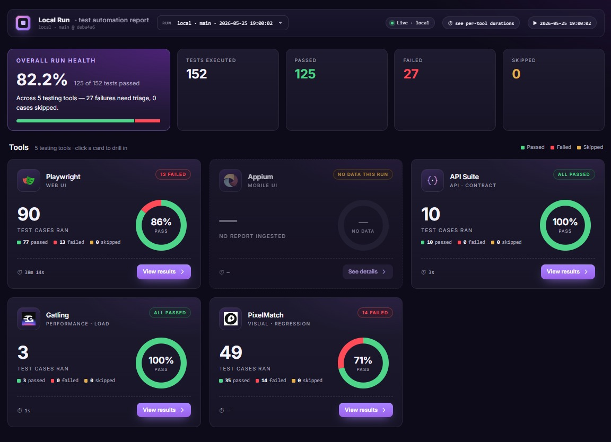
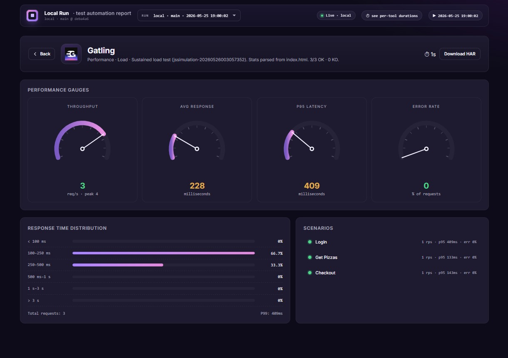

TOM Microkernel
Decoupled architecture separating test logic from execution engines. The proxy handles routing, retries, and telemetry — plugins are pure execution.
One Gherkin scenario, every layer. The Atomic Helix Model replaces heuristic metaphors — the Pyramid, the Trophy, the Honeycomb — with a formal, mathematically grounded execution framework. Stop guessing. Suppress the chaos.
Every layer of AHM is built to isolate failure, unify execution, and eliminate the noise between your test intent and its result.
Decoupled architecture separating test logic from execution engines. The proxy handles routing, retries, and telemetry — plugins are pure execution.
Lyapunov-based jitter absorption dampens TimeoutError and StaleElementReference with exponential backoff. Deterministic failures fail fast.
Unified Gherkin scenarios execute across playwright, appium / mobilewright, and api plugins. One locator JSON — flip DRIVER to migrate, zero rewrites.
API-driven Given steps bypass flaky UI flows entirely. Login, cart, and market state are established in milliseconds via DAOs.
Each engine — Web, Mobile, API, Performance, Visual — runs as an independent gRPC server. Deploy only what you need. Kill one without touching the others.
100% gRPC-driven message passing based on Pi-Calculus channel principles. Every intent is typed, serialized, and versioned through ptom.proto.
TOM decentralizes execution into pure gRPC plugins, coordinated by a chaos-resilient microkernel proxy.
Cucumber step→Route · picks plugin→molecule→sendIntent(INTENT.CLICK, 'loginButton')
:50051dynamic locator resolution · chaos suppression λ<0 · telemetry
:50052:50053:50057:50055:50054:50056Every intent is received at port 50051, where the Microkernel applies dynamic locator resolution and chaos suppression — Lyapunov stabilization — before fan-out to the targeted execution driver over gRPC.
The gatling plugin is bidirectional: standalone CLI execution for heavy load profiles, and TOM-driven intents that return SimulationMetrics directly to the BDD layer in real time.
A formal abstraction of execution constraints — from the granular gRPC Atoms up to the continuous Execution Helix.
L1Indivisible gRPC primitives
kernel/client.tsL2Grouped atomic intents — cross-platform reusable actions
[domain]/molecules/L3Orchestrate molecules + DAOs into business flows; pick the plugin per intent
[domain]/organisms/L4BDD scenarios composing use cases; thin steps that delegate to organisms
[domain]/features/ + step_def/L5Gatling simulations driven by Examples data
[domain]/resonance/L6CI/CD pipelines uniting all layers in isolated orbits
.github/workflows/Add the handler and register it — the orchestrator never changes.
src/plugins/<plugin>/actions/Add Gherkin, bind a thin one-liner, delegate to a route method.
*.feature + step_definitions/A gRPC server, its actions, and one config entry — nothing else moves.
src/plugins/<name>/ + plugins.config.tsOne entry in the typed INTENT catalog — the single source of truth.
src/kernel/intents.tsAll execution layers — API, Web, Visual, Performance, Mobile — unified into a single Execution Helix. Each job is named after the engine that runs it, so a green check names exactly which tool executed.
| Trigger event | API Smokeapi | Web E2Eplaywright | Visual Diffpixelmatch | Performancegatling | Mobileappium · android |
|---|---|---|---|---|---|
| Push to main | gated | smoke | |||
| Pull Request | gated | ||||
| Manual Helix Dispatch | within web | manual only | |||
| Update Visual Baselines | opens PR |
Secrets — API_BASE_URL for every job · BASE_URL for web + visual.
Variables — IOS_APP_PATH optional iOS override · VISUAL_BASE_URL for baseline refresh.
OmniPizza release — public repo with omnipizza-release.apk and the simulator bundle, required by mobile jobs.
Seed baselines — dispatch update-visual-baselines.yml once, then merge the PR it opens.
$
Each layer of the Execution Helix emits a self-contained, human-readable report — so failures are attributable at a glance.

Aggregated pass / fail signal across every Eco-System BDD scenario.

Resonance-layer load profiles with latency percentiles and throughput over time.
Baseline-vs-actual comparison surfacing drift independent of the functional gate.
apps/dashboard — a React + Vite + Express app rendering ingested runs from reports/. Scratch JSON is the source; a run appears once ingested.
$ pnpm dashboard # → localhost:5173 $ pnpm dashboard:ingest --run-id android-2026-05-29 # scratch reports/*.json → one run + manifest entry
Every intent flows through a versioned proto contract. Every locator resolves from a declarative JSON artifact at runtime.
ExecuteIntent RPCsyntax = "proto3"; package ptom; message IntentRequest { string actionId = 1; // NAVIGATE · CLICK · TYPE string targetSelector = 2; // logical key or raw string platform = 3; // playwright:0 · appium:1 } message IntentResponse { string status = 1; // PASS | FAIL string payload = 2; string errorMessage = 3; } service ActionService { rpc ExecuteIntent (IntentRequest) returns (IntentResponse); }
cross-platform artifact{
"checkoutButton": {
"web": "[data-testid='btn-checkout']",
"mobile": "~btn-checkout"
},
"streetInput": {
"web": {
"desktop": "[data-testid='address-desktop']",
"responsive": "[data-testid='address-responsive']"
},
"mobile": {
"android": "UiSelector().description('input-address')",
"ios": "~input-address"
}
}
}
Plugin session state spaces are disjoint. Worker 0's browser context and Worker 1's context share no state — browser, storage, or session — at any point in execution.
Every cross-process hop is a typed gRPC intent sent over a named channel. No shared memory, no global state mutation between layers — concurrency without interference.
The Lyapunov stability condition is enforced by the chaos-proxy. Transient perturbations — flaky selectors, network jitter — are dampened with exponential backoff until the system converges.